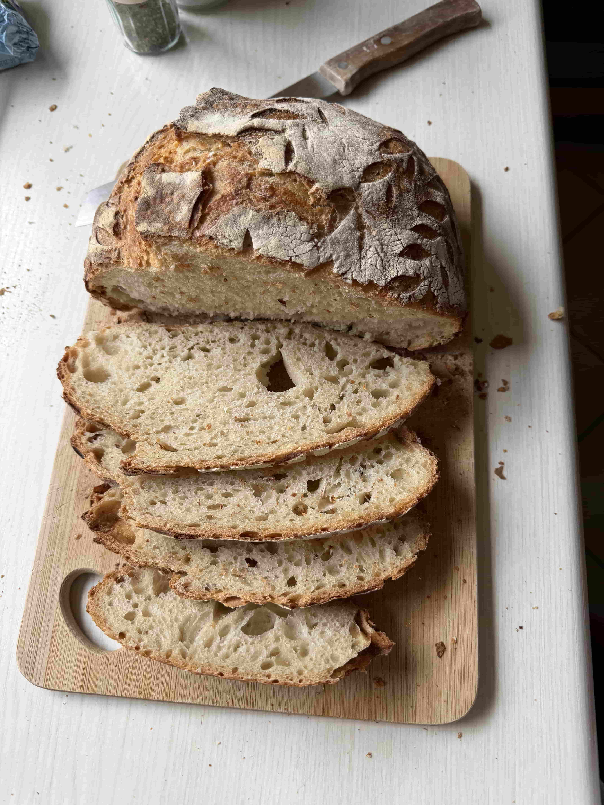
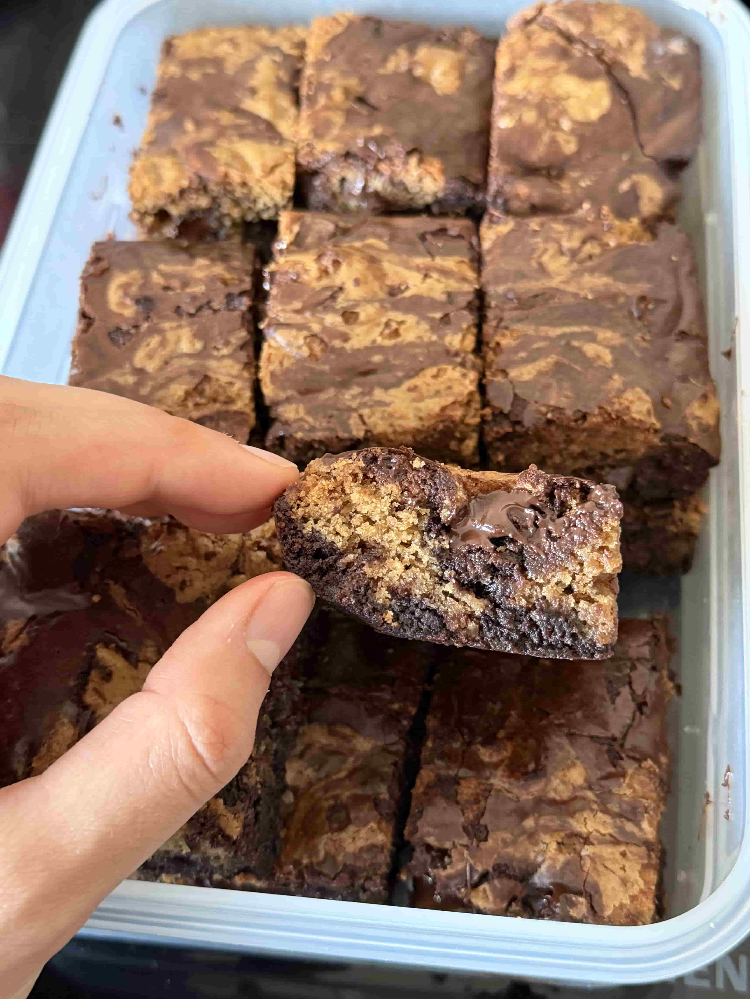
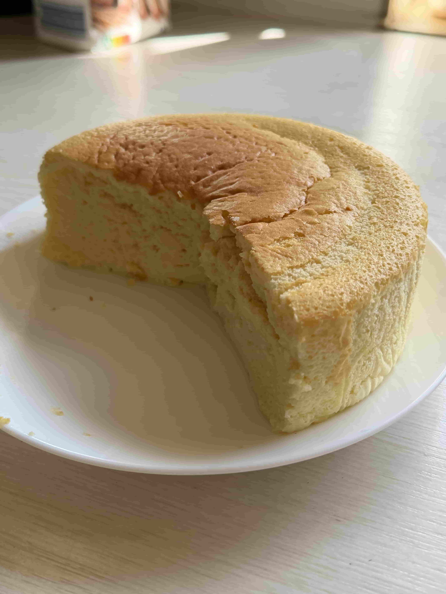
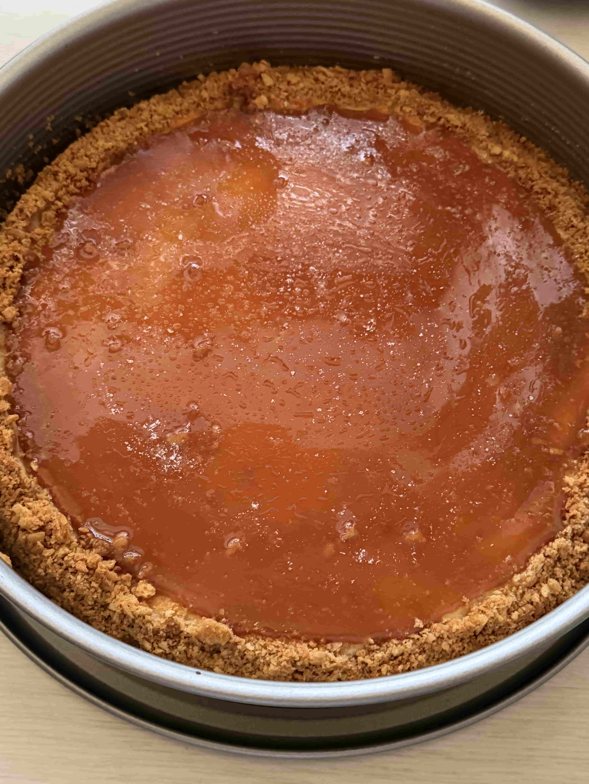
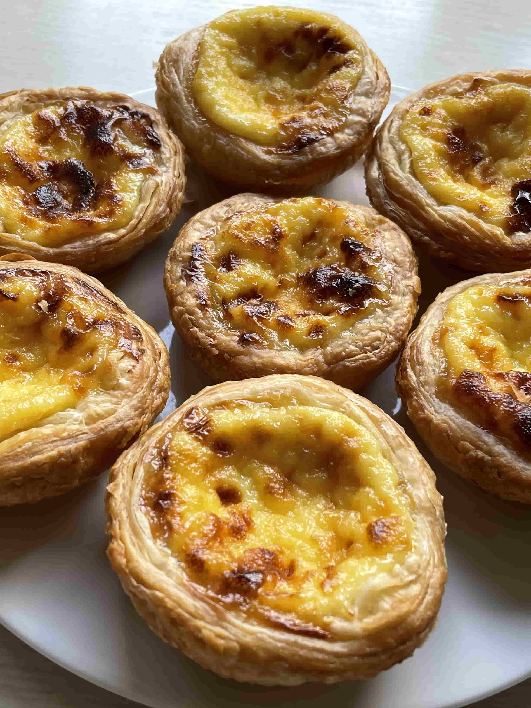

I fell in love with baking recently. Starting off with simple cakes
like chocolate or streusel brfore moving on to more difficult bakes.
I'm currently at a point where I
want to make everything myself from
scratch. This year was life-changing for me when a
friend gave me a sourdough starter and I attempted my
first sourdough breads.
That was my point of no return.
Now I try to use my starter as an addition whenever possible
cause it's just way too much fun working with it.
Anyways, here are some of my favorite things
to bake and how I make them:
Sourdough Bread

Since I bake it so much, I had to put it at the top of my list.All you need is an active starter which you can get from someone or make it yourself. Once you have your starter, feed it and wait until it rises (roughly doubled). That's when it's ready for the dough.
Now for the dough: I don't follow a strict recipe since the result varies depending on ingredient quality, temperature and kneading. But for my breads, I roughly follow this ratio relative to the amount of flour:
- 65% water
- 20% starter
- 2% salt
Cover it with a damp towel and stretch and fold 2-4 times over the span of 2 hours (depending on dough strength). By the end, my dough is very stretchy and has developed a nice gluten network.
Bulk ferment it until roughly doubled in size (usually 6-9 hours).
Then I shape it and put it into a banneton to cold ferment overnight in the fridge. It's ready to bake in the morning.
Scoring is one of my favorite parts, because I can turn my bread into a piece of art. But to keep things simple, just make a cross or one simple cut.
I don't have a dutch oven, so I simulate it by putting a tray filled with water at the bottom for the steam and another tray upside down at the top to trap the steam.
Just using a dutch oven might be simpler and give better results but this method has worked for me quite well.
To mix things up, I tried my luck with fun add-ins such as caramelized onions with cheddar or strawberry with chocolate or apple with cinnamon.
Once you have the basics down of baking normal bread, it's quite fun to just experiment a bit.
I know sourdough seems a bit scary and difficult but no first loaf is perfect. It takes some attempts until you get a pretty decent bread. And trust me, once you get that first perfect loaf, you won't want to stop making it.
Nothing beats that feeling of taking out a beautiful sourdough out of the oven and cutting into it. So don't let first failures discourage you!
Tiramisu
 I made Tiramisu at almost every party/meetup with friends. It's simple, quick, fail-proof and
reliable.
I made Tiramisu at almost every party/meetup with friends. It's simple, quick, fail-proof and
reliable.
I use:
- 2 eggs
- 250g mascarpone
- 100g ladyfingers
- 30-50g of sugar (depending on how sweet I want it)
- 300 ml coffee
- cocoa powder
Then add the mascarpone to the yolk and mix it until homogenized.
I also like to add some vanilla extract, although this is optional.
Fold the mixture into the egg whites and you got your cream.
For the layering - dip the ladyfingers 2-3 seconds in coffee and arrange the layers.
Ideally, let it refrigerate overnight.
When serving, sift cocoa powder on top and enjoy!
Brookies

Brookies - a fusion of Brownies and Cookies. We decided to make these quite spontaneously but they ended up being extremely well received with multiple people requesting the recipe.For the cookie batter:
- 110g melted and cooled butter
- 100g brown sugar
- 60g white sugar
- 1 egg
- 1 tbsp vanilla extract
- 150g flour
- 1/2 tsp baking soda
- 1/2 tsp salt
- 200 g chocolate
For the Brownie batter, you'll need:
- 220g butter
- 45g cocoa powder
- 1 tsp vanilla extract
- 100g brown sugar
- 180-210g powdered sugar
- 200g chocolate
- 3 eggs
- 60g flour
- pinch of salt
- 3 tbsp olive oil
Put it in a heatproof bowl and mix it with cocoa powder, oil, vanilla and 3/4 of the chopped chocolate (the chocolate should melt).
In another bowl, whisk eggs and sugar until the sugar is dissolved (5 minutes, this ensures a crackly top).
Add powdered sugar and combine again.
Finally, add the cooled butter mixture and fold in the remaining chocolate pieces.
Now layer it however you like and bake it for 40 minutes at 175 °C.
When it's done, it will be a bit jiggly in the middle. Let it cool completely before serving.
Japanese Cheesecake

I finally tried making this after seeing it on my youtube recommended multiple times. Turned out to be one of my favorite cakes. Something about fluffy textures that melt in your mouth as soon as you take a bite makes me crazy.Anyways, to make it you'll need:
- 4 eggs
- 60-80 g sugar
- 1/4 tsp lemon juice
- 160g cream cheese
- 20g butter
- 60g milk
- 40g flour
Remove the bowl from the waterbath and mix in the milk
After letting it cool a bit, sift in the flour (sifting avoids lumps) and egg yolks, then combine again.
Beat the egg whites with lemon juice and gradually add sugar until you get still peaks. Be careful not to overdo it (should not curdle).
Fold it into the cream cheese batter gently.
Finally, pour the mixture into the mold and tap it on the counter to release any air bubbles.
Bake for 20 minutes at 160°C in a water bath (water bath is optional - it's mostly to avoid a cracking top). Then bake for another 50 minutes at 110°C.
Optionally spread some honey on the warm top of the finished product for extra sweetness or enjoy as is!
Salted Caramel Cheesecake

A New York Style Cheesecake but caramel flavored!To make it, you'll need:
-
cookie crust:
- 200g cookies
- 80g butter
- 200g sugar
- 85g warm butter
- 120g heavy cream
- 1 tsp salt
- 400g cream cheese
- 50g sugar
- 100g sour cream
- 3-4 tbsp salted caramel
- 1 tsp vanilla
- pinch of salt
- 2 large eggs
- 1 tbsp flour
salted caramel
cheesecake
For the caramel, cook the sugar in a saucepan on medium heat until golden brown (not too dark) then turn the heat off and add in butter and warm cream. Mix quickly and well until combined.
Finally, add some salt and set aside to cool.
For the batter, beat the cream cheese with sugar until fluffy.
Mix in cream, sour cream, 1-2 teaspoons of the salted caramel.
Pour the batter into the crust mold and bake at 160°C for 50-60 minutes (optionally in water bath to avoid a cracking top).
Let it cool before finally spreading a layer of caramel and sprinkling some more salt on top.
Egg Tart

We always had these in Taiwan and since we couldn't get them in Germany, I decided to make them myself. And they turned out to be even better than the ones we used to get in Taiwan.I use:
-
Puff Pastry
- 30g butter
- 2g salt
- 3g sugar
- 150g flour
- 60g water
- 80g butter (to fold in)
- 1 egg
- 2 egg yolks
- 45g sugar
- 150g heavy cream
- 75g milk
Filling
Also roll out the butter into a rectangle. Then refrigerate both for 30 minutes.
After cooled, place the butter on top of the middle of the dough rectangle. Fold the dough from the sides, wrapping the butter inside it (It should be a layering process).
Repeat this process of refrigerating after each rolling out and folding. You should do this 3 times in total (resulting in 6 layers of butter).
Finally, roll the dough thinly with a rolling pin and roll it up (like a cinnamon roll). Place it in the fridge while making the rest.
For the filling, mix all ingredients together and refrigerate for 2 hours to let the sugar melt.
Now, cut the dough roll into 12 equally sized pieces and press it into their tart molds. You should see the spirals of the layers. Press it up the sides to create a cup shape.
Fill all cups with the egg mixture - about 80% full.
Then bake it at 200°C for 25 minutes.